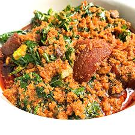
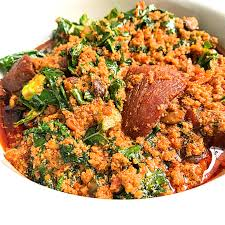

EGUSI SOUP
Egusi soup is very popular across West Africa. It is prepared from ground egusi melon seed and typically cooked with meat or fish and leafy vegetables. The recipe I am sharing here is for easy and tasty Nigerian egusi soup, also known as “efo elegusi”, in Yoruba language. It is a version of egusi soup cooked with leafy vegetables.
Efo elegusi is traditionally eaten with foods “swallow” like eba, fufu, iyan (pounded yam) etc. It is also a great accompaniment to rice, yam and plantain.
| Ingredients Measurement |
| Palm oil 1/4 cup |
| Onion 2 |
| Grounded Crayfish 3tablespoon |
| Dried fish 1cup |
| Salt to taste |
| Pumpkin leaves 1 bunch |
| Smoked mackerel 3 fillets |
| Egusi 1 1/2cup |
| Fermented locust beans 1 tablespoon |
| scotch bonnet pepper 2 |
| Red bell pepper 1 |
| Tomatoes 3 |
METHOD ON HOW TO PREPARE EGUSI SOUP
- Blend red bell pepper, scotch bonnet pepper, tomatoes and one onion in a food processor with a cup of water.
- chop the remaining onion. Cut the smoked mackerel fillets into smaller pieces. Keep to one side.
- Heat the oil in a saucepan for 30 secs, add the chopped onions. Fry until the onions appear translucent, then add the locust beans. Stir for one minute to prevent sticking.
- Add the blended pepper mix and leave to cook for around 15 mins, stirring occasionally, then add some water into the pot (3-4 cups). Pour in the dried fish and ground crayfish with some a little salt to taste. Smoked mackerel is salty, and will make the soup more salty, so make allowance for that. Leave to simmer for 5 mins.
- Take 2 tablespoons of the cooking sauce and add into the egusi. Mix well to make a thick paste. Use your hands to make small egusi balls before dropping into the pan.
- Reduce the heat and allow to cook for at least 20 mins.
- Mix in kale and smoked mackerel. If you think the soup is too thick, add some more water. Leave to simmer for 10 mins, still under low heat.
- Remove from heat and serve.
.jpg)

.jpg) 
